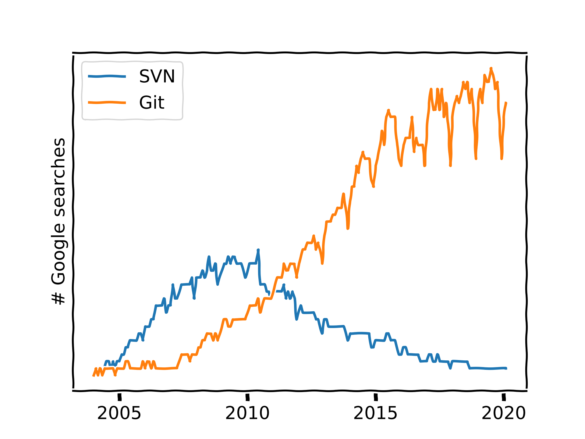

you need version control
Arnaud Allera
“Ma thèse en 180 guppys”
Une étude de la vision chez les poissons guppy
C’est parti !
- un dossier
- un Excel
- une expérience sur la vision
Analyse
- Traitement statistique lourd
- Superviseur a un script Matlab !
Ça marche pas mal !
- Améliore traitement des données
- Effet d’une variable pas compris 🤔
- Sauvegarde sur disque dur de temps en temps
Réunion de projet
- Figures avec un script R “
script.r” - Présente ses bons résultats
- Superviseur veut une étude avec un protocole légèrement différent 🧐
- Deadline !
Nouveau protocole
- Lance une nouvelle expérience
- Copie script matlab (
matlab2.m) - Modifie ses figures (
script2.r)
Nouvelle réunion
- Compare “
matlab.m” et “matlab2.m”" en les modifiant légèrement - “
script-modifie.r”, “comparaison.r”, “matlab-modif.m”, “matlab2-modif.m”
- Des Excel
- 4 scripts
- Des figures de partout
- un PowerPoint
… victoire !! 🤸
Rédaction
- commence à écrire un article
- modifie les scripts pour les besoins de l’article
- rédige et soumet après quelques mois !
Attends une seconde…
Catastrophe 🤯🤯🤯
matlab-Modi_Final2.mprend la colonne N au lieu de N+1 🤯- depuis quand ? 🤷
- toute l’analyse est mauvaise, plus d’effet significatif 🙊
- retrait de l’article
- design de l’expérience à revoir totalement
Et vous ?
Tout va bien
Fichiers

Révisions

Conflits
- GDrive / Dropbox : “Salut à tous, Je vais modifier le document, merci d’attendre que j’aie fini, cdlt”
- GDoc / Sharepoint / Overleaf : “Qui vient de casser la biblio ?”, guerres d’édition, connexion internet requise, pas de ‘branches’
Dropbox
- snapshots : “Est-ce que j’avais déjà ajouté X le 4 février 2018 ?”
- 150 modifications entre deux snapshots… 😬
Code
Okay, parle nous de ton machin
Introducing Git
- 1 dossier : 1 dépôt
- des évènements (un historique)
- des “snapshots” (commits)

- Un graph, où coexistent des branches

- Un système décentralisé
- Un ensemble de branches = un projet organisé

Pour commencer
git initIl faut taper des commandes ?
Nope.
Sublime Merge Github Desktop Atom
XCode OverLeaf VS Code Matlab Spyder …
Mon oncle m’a dit que les vrais dev’ utilisent SVN

Reprenons
Git “en local”
- Sélectionner des changements
- En faire un commit.
- Éventuellement défaire des commits (“revert”)
Faire un commit ?
git add example.txt
git commit --message "Added file: example.txt"Git “en ligne”
- tous les X commit, synchronisation (et merge)
git pull
git pushEt c’est tout ! Git permet maintenant :
- merge automatique
- “revert”
- “blame”, “history”
Pour rester organisé :
- messages des commit
- branches
Démos
Créer un projet
- Créer le dépôt localement
- Le mettre sur git*.com
Cloner un projet
- Le récupérer sur git*.com
Synchroniser son travail (commits)
Organiser son travail (branches)
Collaborer (merges)
L’intégration continue (PreciSo)
Cas concrets
Rédiger un article
🤫 Tout projet Overleaf est un dépôt Git !
Suivre une manip
Ce que font Git/Gitlab/Github
- Conserver un historique exhaustif de votre projet
- Permettre la fusion des versions et la gestion de branches
- Suivre l’avancement du projet, le garder en bonne santé, pour longtemps
Ce que Git ne fait pas
- Gérer votre projet et réfléchir à votre place 💁
- Gérer proprement la fusion de fichiers binaires complexes (images, Photoshop, Word, vidéo,…)
- Gérer des collections de centaines/milliers de fichiers
- Gérer de très gros fichiers (utiliser Git LFS)